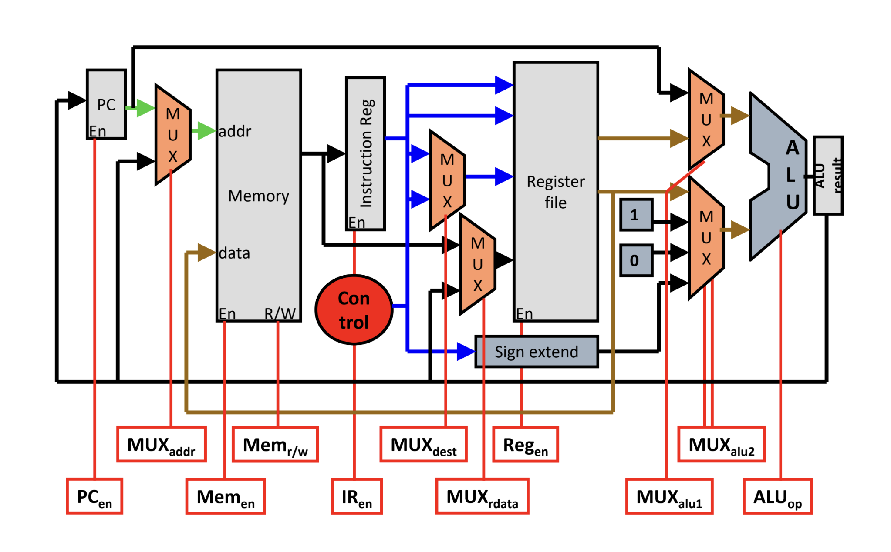

Related Courses: EECS 370
The idea behind Multi-Cycle processors is that we can break instructions up into several steps, and then execute each step during a clock cycle. When doing this, now shorter instructions can take less time because they take fewer cycles.
Especially as ISAs become more complicated (think having a multiply opcode), this becomes a lot more valuable because you can have instructions that take many steps no longer holding back the performance of very simple instructions.
Note: In LC2K, you’ll often notice that the performance benefit is not that large (or sometimes even negligible, if not negative). This is because all instructions are relatively tame and simple, so the overhead of a multi-cycle processor is often higher than the benefit that it offers.

Primary Changes from the LC2K Single-Cycle Datapath:
- Enabling / Disabling the Program Counter
- Instruction Register
- Allows us store the current instruction without having to call from memory
- Memory is Consolidated (Proper von Neumann Architecture)
- [[Combinational Logic#Arithmetic-Logic Units (ALUs)#ALUMux Now has 0 and 1 as options as well
- ALU Result is stored
Cycles Per Instruction
All Instructions have the same first two cycles:
- Cycle 0: Fetch Cycle
- This involves reading from the instruction memory and storing the values fetched into the instruction register.
- During this cycle, we also calculate
PC + 1to use all parts of the processor because otherwise the ALU is not being used
- Cycle 1: Decode
- This involves taking the instruction from the instruction register and loading the relevant values from the Register file (
regA,regB) / pass values into the Sign Extender - During this cycle, we set
PCtoPC + 1
- This involves taking the instruction from the instruction register and loading the relevant values from the Register file (
Add / Nor: 4 Cycles
- Cycle 3:
add/nor- Now that we’ve read values from the register file, we can use the ALU to
add/northe values together and store the result in the ALU Result Register
- Now that we’ve read values from the register file, we can use the ALU to
- Cycle 4: Store in Register File
- After we are sure that the ALU Result Register has updated, we can use this result as the input to the register file and store it into
destReg
- After we are sure that the ALU Result Register has updated, we can use this result as the input to the register file and store it into
Load Word: 5 Cycles
- Cycle 3: calculate
regA + offset- Now that we’ve read
regAand sign-extended our destination, we can add those together to get the value in memory that we want to read to be able to store back intoregB
- Now that we’ve read
- Cycle 4: read
regA + offsetfrom memory (getMEM[regA + offset])- Using the ALU result, we can pass that as our source address for memory to read into the “data” register
- Cycle 5: store
MEM[regA + offset]intoregB- Now that the data from memory is calculated / stored in a register, we can store it into the register file at
regB
- Now that the data from memory is calculated / stored in a register, we can store it into the register file at
Store Word: 4 Cycles
- Cycle 3: calculate
regA + offset- Now that we’ve read
regAand sign-extended our destination, we can add those together to get the value in memory that we want to read to be able to store back intoregB - Note: we’re still going to want to read
regBfrom the register file during this cycle, because that value will be used in the next cycle to write to memory
- Now that we’ve read
- Cycle 4: write
regBintoMEM[regA + offset]- Using these calculated values, we can write our desired value into memory
BEQ: 4 Cycles
- Cycle 3: calculate
beqdestination (PC + 1 + offset)- Using the value of
PC + 1currently stored inPCalready, we can add that to the sign extended offset using theALUto get the potential next destination if the equality holds
- Using the value of
- Cycle 4: potentially update
PC- Add an OR Gate to the PC-Enable bit: either the PC enable bit is 0, or we’re in State 12 (the state of this current cycle) AND the values in
regAandregBare equal (changing the relevant muxes)
- Add an OR Gate to the PC-Enable bit: either the PC enable bit is 0, or we’re in State 12 (the state of this current cycle) AND the values in
Choosing Which State to Transition To
To avoid cluttering our ROMROM]] instead that takes in the opcode and calculates the next state.
This will require the use of an AND GateMux]].
Measuring Performance
Measuring performance of a multi-cycle datapath can be done using multiple (equivalent) formulas. Note: all of these depend on the specific distribution of instructions.
The first formula uses CPI, or “cycles-per instruction”. This is the average number of cycles per instruction in a program. The second can easily be obtained using dimensional analysis with the first. , where is total time and is the number of instructions in the program total.